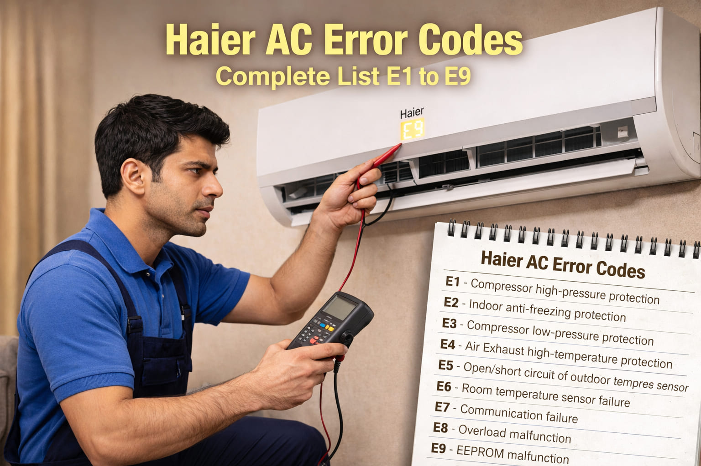

A family from Charsadda called me in June 2016. Their Haier AC was showing E2 error. There was thick ice on the indoor unit. Water was leaking on the floor. The father said "My elderly mother is suffering in this heat." I told them to turn off the AC and check the filters. They opened the front panel and found the filters had never been cleaned since installation. The filters were black with dust. They cleaned them and let the ice melt for 5 hours. After restarting, the AC worked perfectly. The family was very happy.
Error: E2 | Fix: Clean filters and thaw ice
Haier is one of Pakistan's most trusted air conditioner brands. Haier ACs display error codes to help diagnose problems quickly. This guide covers all Haier AC error codes from E1 to E9 with real solutions.
Quick Tip: Before calling a technician, try resetting your Haier AC. Turn off the unit and switch off the circuit breaker for 10 to 15 minutes. This clears temporary glitches, especially after power fluctuations.
A farmer from Dera Ghazi Khan called me in August 2022. He said "My Haier AC is showing E5 error. The outdoor unit is not responding. It is very hot and my crops need me but I cannot sleep at night." I asked him to check the wiring between indoor and outdoor units. He found that monkeys had pulled the wire and damaged it. He repaired the wire connection. The error went away. He said "I never thought monkeys could cause this problem. Thank you for your help."
Error: E5 | Fix: Repair damaged communication wire
| Error Code | Meaning | Common Fix | Difficulty |
|---|---|---|---|
E1 | Room temperature sensor | Check sensor, wiring | Easy |
E2 | Evaporator sensor / Freeze | Clean filters, thaw unit | Easy |
E3 | Condenser sensor / Outdoor fan | Clean outdoor unit | Medium |
E4 | Compressor discharge | Check refrigerant | Hard |
E5 | Communication error | Check wiring, reset | Medium |
E6 | Indoor fan motor | Check capacitor | Medium |
E7 | Outdoor fan motor | Check fan, capacitor | Medium |
E8 | EEPROM error | PCB replacement | Hard |
E9 | High pressure protection | Clean condenser | Medium |
A school teacher from Khairpur called me in July 2020. He said "My Haier AC is showing E6 error. The indoor fan is not spinning. I have online classes to teach and it is very hot." I guided him to check the fan capacitor. He had a multimeter. The capacitor reading was far below the rated value. He bought a new capacitor for 400 rupees. He replaced it himself. The fan started working. He said "You saved me from buying a new AC. I will share your website with my fellow teachers."
Error: E6 | Fix: Replace indoor fan capacitor
Meaning: The sensor that measures room temperature has failed.
Solutions: Turn off power. Locate sensor behind front panel near air intake. Check connections. Measure resistance at room temperature. Normal reading is 5 to 10 kilo-ohms at 25 degrees. Replace sensor if faulty.
Meaning: The evaporator coil is freezing or sensor is faulty.
Solutions: Turn off AC and let it thaw for 2 to 3 hours. Clean air filters thoroughly. In dusty cities, clean filters every 2 weeks. If error returns, refrigerant may be low. Call technician.
Warning: Never run AC with ice on coils. It can damage the compressor.
Meaning: Problem with outdoor unit.
Solutions: Clean outdoor condenser coil with water. Remove debris around unit. Check if outdoor fan spins. Check fan capacitor. Locate condenser sensor on outdoor coil. Check connections. Replace sensor if faulty.
A businessman from Kohat called me in September 2018. He said "My Haier AC is showing E3 error. The outdoor fan is making noise and then stopping. The AC is not cooling." I told him to check the outdoor fan blades. He found that one fan blade was cracked and unbalanced. He ordered a new fan blade from the market. He replaced it himself. The fan ran smoothly. The error went away. He said "You diagnosed the problem perfectly over the phone. I am very grateful."
Error: E3 | Fix: Replace cracked fan blade
Meaning: Compressor discharge temperature sensor has failed or compressor is overheating.
Solutions: Turn off AC and let compressor cool for 30 minutes. Clean outdoor condenser coil. If error continues, refrigerant may be low. Call technician. Compressor work requires professional help.
Meaning: Indoor and outdoor units cannot communicate.
Solutions: Turn off both units at circuit breaker for 15 minutes. Check all wiring connections. Look for rodent or animal damage to communication cable. Ensure connections are tight. If wiring is good, PCB may need replacement. Install voltage stabilizer for protection.
Solutions: Turn off power. Check if fan rotates freely. Clean fan blades. Check fan capacitor with multimeter. Replace if faulty. If capacitor is good, motor may need replacement.
Solutions: Turn off power to outdoor unit. Remove debris around fan. Check if fan rotates freely. Inspect fan capacitor for bulging. Test capacitor. Replace if faulty. If capacitor is good, motor may need replacement.
A college student from Nowshera messaged me in March 2024. He said "My Haier AC is showing E9 error. The AC runs for 10 minutes and then stops. The outdoor unit feels very hot." I asked him to check if the outdoor fan was spinning. He said the fan was running but slowly. I told him to check the fan capacitor. He found the capacitor was bulging. He replaced it with a new one. The fan started running at full speed. The error went away. He said "I am studying engineering. You taught me something useful for my career."
Error: E9 | Fix: Replace outdoor fan capacitor
Meaning: Main control board memory has failed.
Solutions: Try power reset for 15 minutes. If error persists, main PCB needs replacement. Contact Haier service center or certified technician. PCB replacement requires exact model match.
Professional Only: PCB replacement requires technical expertise.
Meaning: System pressure is too high.
Solutions: Turn off AC for 30 minutes. Thoroughly clean outdoor condenser coil. Ensure outdoor fan is running properly. Remove obstructions around outdoor unit. If problem continues, call technician.
Pakistan Specific Tips: Install a voltage stabilizer to protect the PCB. Clean filters every 2 weeks in dusty areas. Check for animal damage to wiring, which is common in many areas. In extreme heat above 45 degrees, it is normal for ACs to run continuously.
Safety Warning: Always disconnect power before any inspection. For compressor, refrigerant, or PCB issues, always call certified technicians.